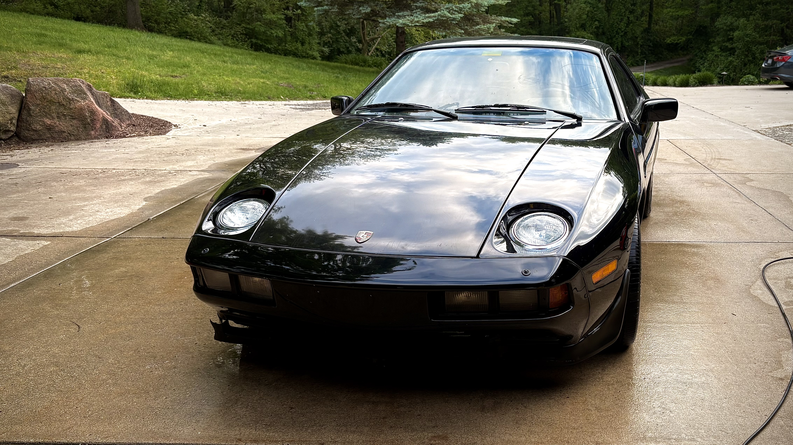
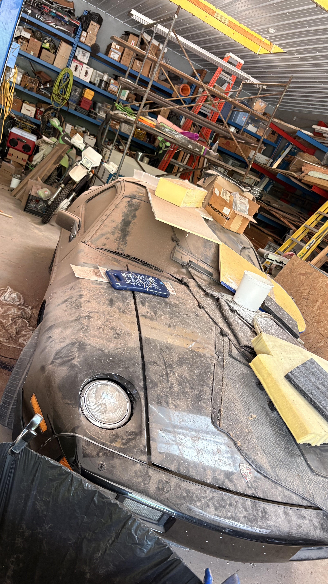
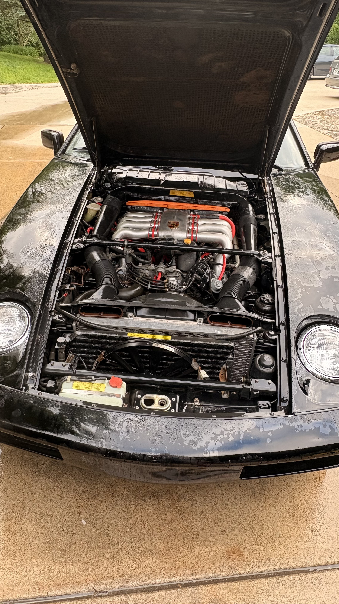
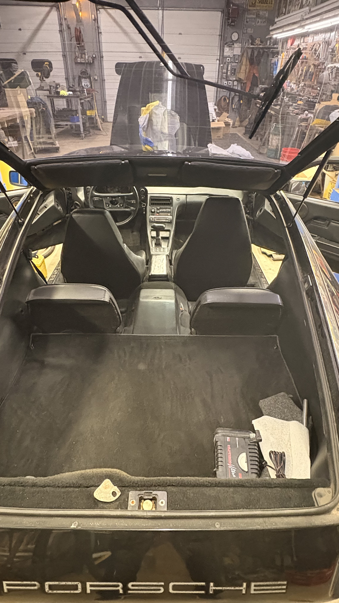
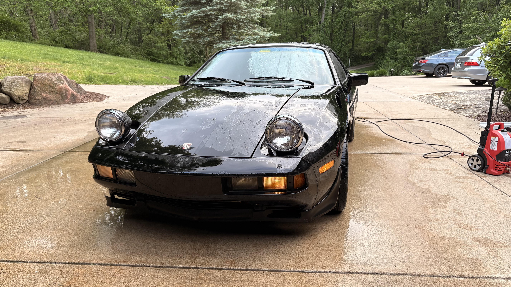
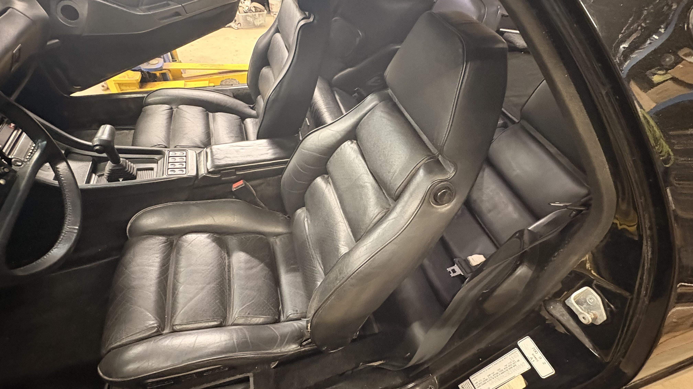
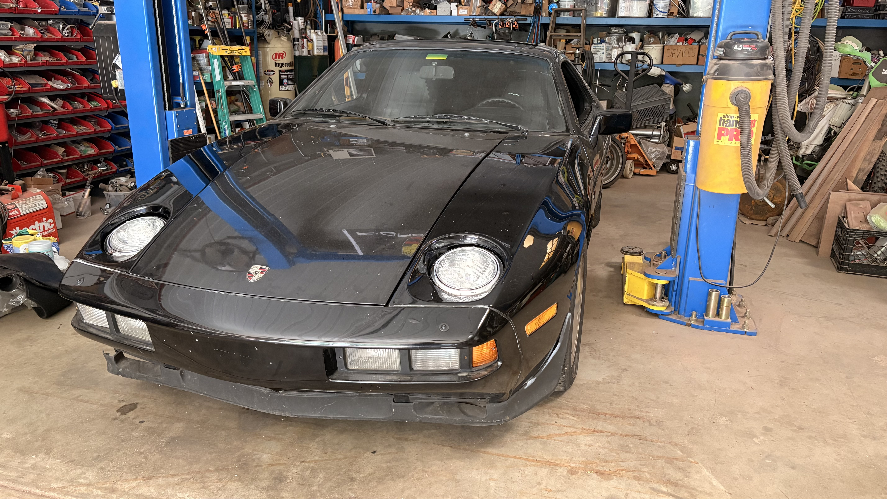
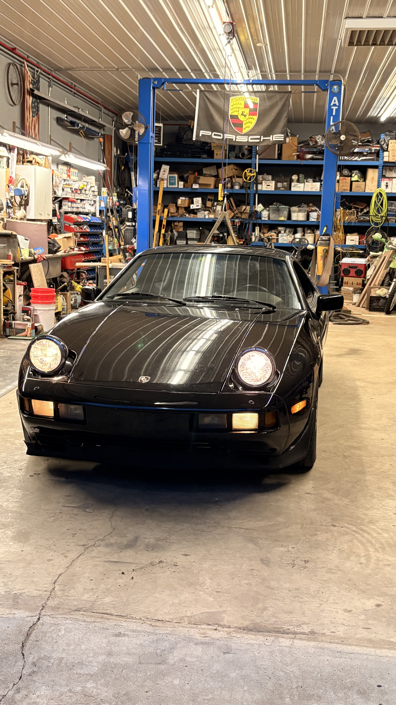
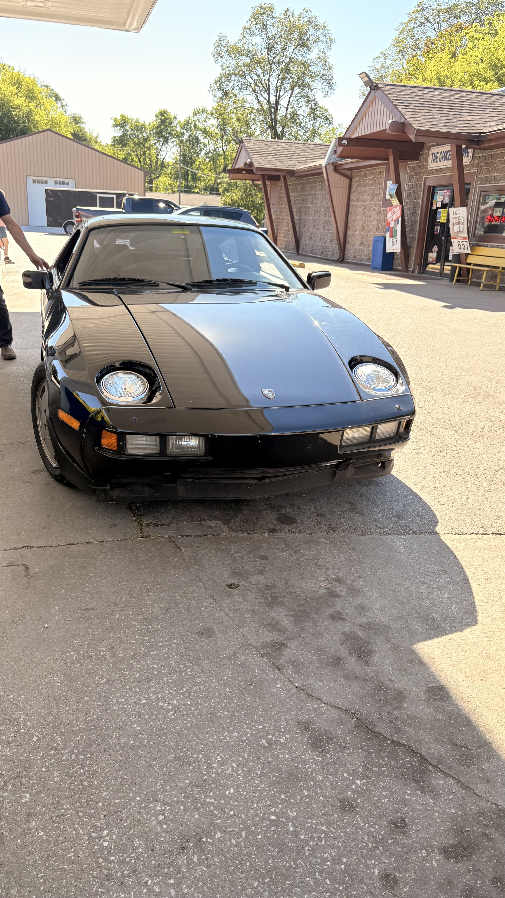
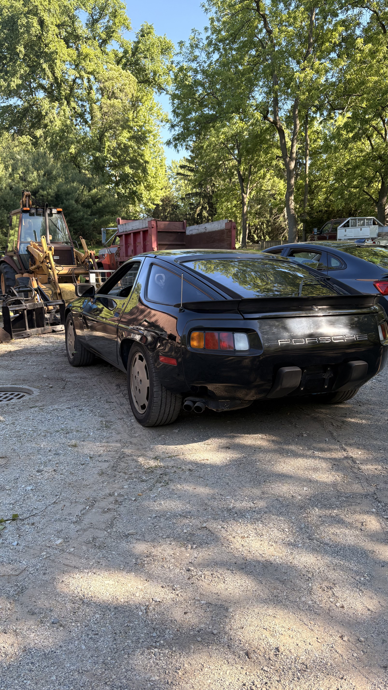

Engineering Projects — Automotive
A decade-dormant Porsche 928S pulled from barn storage and brought back to life - diagnosing a long-standing misfire down to a crushed injector seal, restoring a dead instrument cluster, and cleaning up years of accumulated neglect.



This 928 belonged to a friend's father — his daily driver through the eighties, until it started misfiring and ended up parked in a barn, where it sat untouched for well over a decade. When I pulled it back out it was exactly as he'd left it: a thick layer of dust over everything outside, and serious mold growth through the interior. The goal from the start was to get it driving properly again, not just clean it up — which meant actually tracking down the misfire rather than guessing at it.
As found - over a decade of barn dust.
First priority was just getting it clean enough to work on. I scrubbed down the exterior and did a thorough job on the interior — mold on a car that's been sealed up for years gets into everything, so that took a while before it was in a state I was comfortable spending time inside. Once it was clean, I could actually start diagnosing.

Engine bay and interior after the initial clean.
My first theory on the misfire was a vacuum leak — not an uncommon culprit on a car this age. To test it I ran a pressurized smoke machine through the intake, which required sealing off the intake manifold. Nothing stock fit, so I modeled a custom adapter in Fusion 360 and printed it to mate the smoke machine hose directly to the manifold opening. After pressurizing the system and going over every inch of hose and fitting, nothing showed up. No leak.

Up on the lift for fuel system access.
With vacuum ruled out, I moved on to the fuel injectors. The method here was simple but effective: with the engine running, I went cylinder by cylinder and unplugged each injector in turn. On a healthy injector, pulling it while the engine is running causes a noticeable RPM drop and change in sound — the engine has to compensate for losing that cylinder. One of them produced no change at all, which confirmed it wasn't contributing. That was the culprit.
I pulled apart the fuel rail to get the injector out, and when it finally came free the problem was immediately obvious — the main O-ring seal was completely crushed and deformed, almost unrecognizable as a seal. It had likely been that way for a long time, causing a lean condition on that cylinder. I sourced a replacement seal, reinstalled the injector, and the misfire was gone on the first start.
The next issue was electrical. The entire instrument cluster had gone dark, and a handful of warning lights were lit up with no clear reason. I pulled the dashboard apart and cleaned all the electrical contacts, which were heavily oxidized after years in storage. While I was in there I found several connector clips that had been put back in the wrong positions at some point — likely from a previous repair attempt. Once I tracked down where each one belonged and reseated them correctly, the cluster came back to life.
The car runs cleanly now — no misfire, full instrumentation, and a proper interior again. What's left is cosmetic: some trim pieces to replace and a few small things to address before it's fully back to where it should be. The most satisfying part of the diagnosis was that both root causes turned out to be completely fixable without major work — a $5 O-ring and some connector cleanup. It's a good reminder that on older cars, the scary-sounding problems often have straightforward answers if you're willing to work through them methodically.


Restored interior and on the 2-post lift.



Exterior after cleaning.